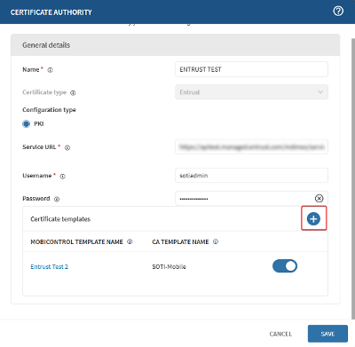

Define templates to issue dynamic certificates using your integrated certificate
authority.
Perform Step One: Integrate Certificate Authority Services.Create certificate templates in SOTI MobiControl using your
integrated Certificate Authority to issue managed (dynamic) certificates. Templates
define how certificates are generated and assigned to devices, with support for unique
device-specific macros. For details, see Deploying Managed (Dynamic) Certificates.
Tip: You can also create templates during the Certificate Authority service
integration.
Note: Certificate Authorities may reject identical subject
names used for more than one device in the same group. Use unique macros in your
certificate templates for each device to successfully add certificates.
The following macros are available for subject alternate names:
Enrollment User*
Enrollment User Email Address*
Device Name
Device MAC Address
Device Serial Number
Device Platform
Important: To use the Enrollment User or
Enrollment User Email Address macros, you must enroll your devices with
LDAP.
From the SOTI MobiControl main menu, select Global
Settings.
From the Global settings menu, select Services > Certificate Authority. The Certificate Authority page
displays.
Select your integrated certificate authority connection.
In the Certificate Authority dialog box, select
Add () to define template details.

Once configured, select Save to complete template
creation.
You have successfully defined a certificate template.
Note: When testing the functionality of certificate templates, use
the default template for simplicity. If you must use a custom template, do the
following:
In Template properties, under Issuance
Requirements, set Authorize Signatures to 1.
For Policy type required in signature, select
Application Policy.
For Application Policy, select Certificate Request
Agent.